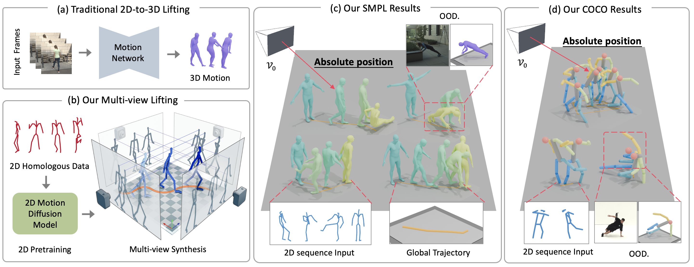
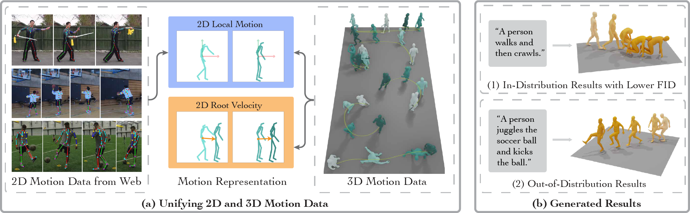
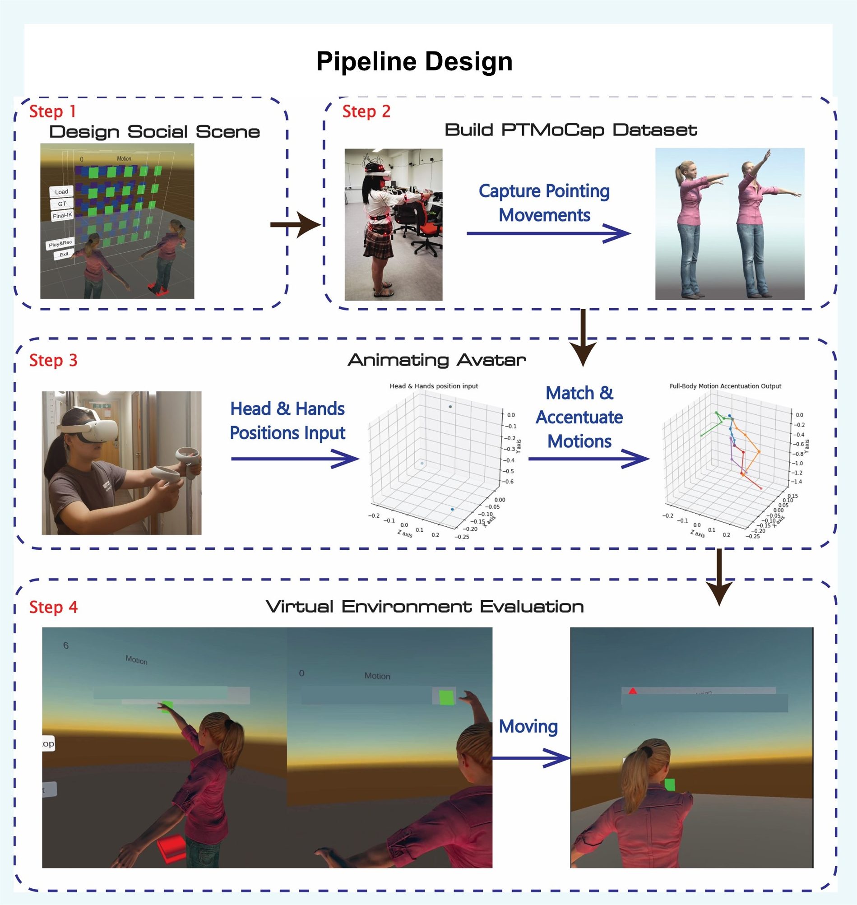

About Me
I am a Ph.D. student at Zhejiang University's State Key Laboratory of CAD & Computer Graphics, specializing in 3D human motion generation and computer vision. My research focuses on realistic 3D human motion synthesis and human behaviour intelligence.
I've graduated from Beihang University with a major in computer science and technology. Then I obtained a degree in computer graphics from University College London (M.Sc. with Distinction). In 2024, I've joined 3D Vision group in Zhejiang University, supervised by Prof. Xiaowei Zhou, Sida Peng, and Hujun Bao.
Research Projects

Mocap-2-to-3
Zhumei Wang, Zechen Hu, Ruoxi Guo, Huaijin Pi, Ziyong Feng, Liang Zhang, Mingtao Pei, Siyuan Huang
Multi-view lifting for monocular motion recovery with 2D pretraining. Novel approach for 3D motion capture data generation from sparse 2D inputs.

Motion-2-to-3
Ruoxi Guo, Huaijin Pi, Zehong Shen, Qing Shuai, Zechen Hu, Zhumei Wang, Yajiao Dong, Ruizhen Hu, Taku Komura, Sida Peng, Xiaowei Zhou
Leveraging 2D motion data for 3D motion generation. Achieved SOTA results with 15% improvement in motion quality metrics.

User Motion Accentuation in Social Pointing Scenario
Ruoxi Guo, Lisa Izzouzi, Anthony Steed
Real-time full-body motion generation from sparse tracking data. Achieved 92% user satisfaction in social VR scenarios.

Hand-by-Hand Mentor
Ruoxi Guo, Jiahao Cui, Wanru Zhao, Shuai Li, Aimin Hao
AR-based piano training system with automatic gesture generation. Improved user accuracy by 85% in musical performance.
Technical Skills
Programming
- Proficient: Python, C++, LaTeX
- Experienced: C#, Java, MATLAB, JavaScript
Frameworks
- DL: PyTorch, TensorFlow
- CG: OpenGL, Unity3D, Blender
- Web: React, Node.js, Three.js
Research Areas
- 3D Motion Generation
- Computer Vision
- Augmented Reality
- Diffusion Models